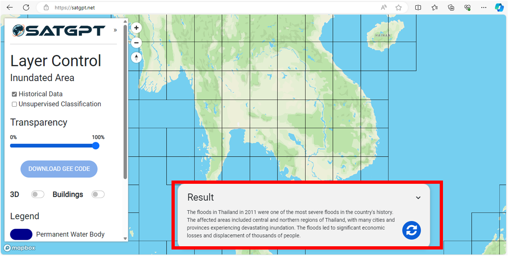
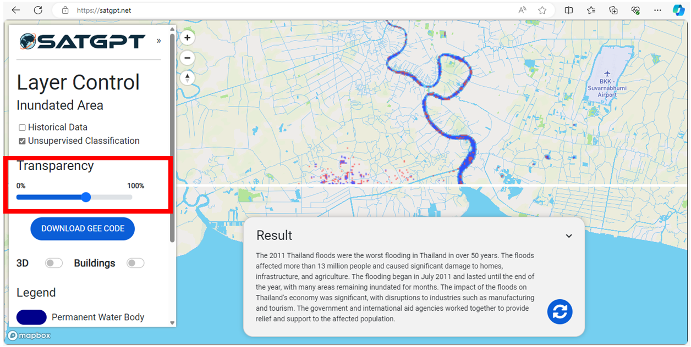

SATGPT, an innovative solution that leverages the current capabilities of LLMs and integrates them with cloud computing platforms and Earth Observation data. SATGPT represents a fully functional, next-generation spatial decision support system designed for rapid deployment, particularly in resource-limited contexts.
There are three sections in this guide.
- Interface overview
- SATGPT Tool operation
- Acknowledgement and further reading
Interface overview
SATGPT tool operation
This section shows steps to operate the SATGPT tool
- Browse to https://satgpt.net/ to access the tool.
- On the layer control panel select the tool of operation to map the Inundation area
Option 1: Historical Data - Enter the prompt of interest specifying an incidence of flood occurrence specific to a region.
For example: You can try by entering the prompt.Tell me about floods in Thailand that occurred in 2011 (Examples can also be found in the prompt tab)Tips: Make sure to specify the “year” and “country” for quick prompt responses
- Click on the response icon to run the prompt and the resulting response will provide you with specifics of the flood events.
- The prompt will run to generate the response and result with detailed information of the specific flood event 
- Zoom and click on a grid that is specified in the result.
For example, the following result shows that the floods affected areas included central and northern regions of Thailand. - Adjust transparency according to preferences using the sliders on the Option Panel
- Download GEE code to receive the JavaScript file that can be used directly in the Google Earth
Engine (GEE)
Note: The downloaded GEE code javascript file can be opened with notepad to read the codes that can be directly run in your GEE code editor platform to visualize the 2D image. - Use the Toggle button on the options panel to enable 3D view (hold CTRL when clicking and
dragging to tilt and rotate the map)
In the same way, use the toggle button to allow building view, to visualize buildings specially in an urban area to capture 3D view - On the layer control panel select the tool of operation to map the Inundation area
Option 2: Unsupervised classification - Enter the prompt of interest specifying an incidence of flood occurrence specific to a region.
Using the same example:. Tell me about floods in Thailand that occurred in 2011 - Click on the response icon to run the prompt and the resulting response will provide you with specifics of the flood events.
- The prompt will be run to generate the response and result with detailed information of the
specific flood event.
The response can be visualized by selecting the grid. - Zoom to the grid and click to the grid of interest, based on the information in the prompt response.
- Adjust transparency according to preferences using the sliders on the Option Panel 
- Download GEE code to receive the JavaScript file that can be used directly in the Google Earth
Engine (GEE)
Note: The downloaded GEE code javascript file can be opened with notepad to read the codes that can be directly run in your GEE code editor platform to visualize the 2D image. - Use the Toggle button on the options panel to enable 3D view (hold CTRL when clicking and dragging to tilt and rotate the map). In the same way, use the toggle button to allow building view, to visualize buildings specially in an urban area to capture 3D view.